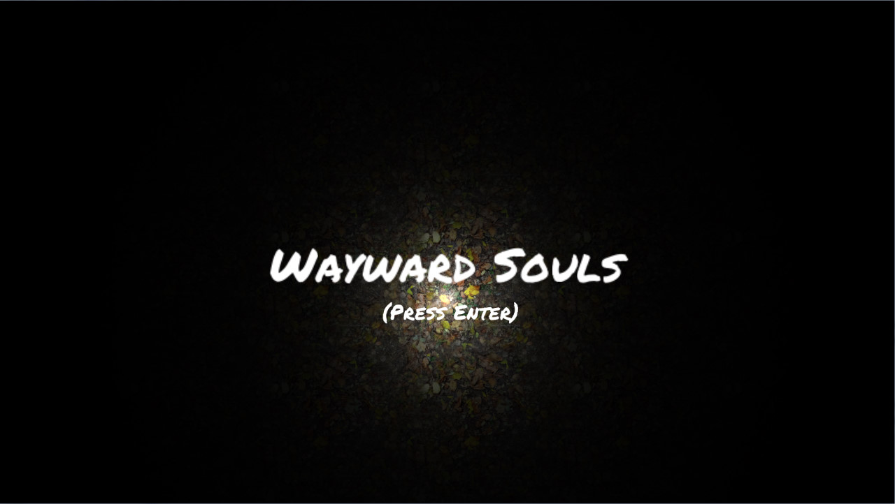
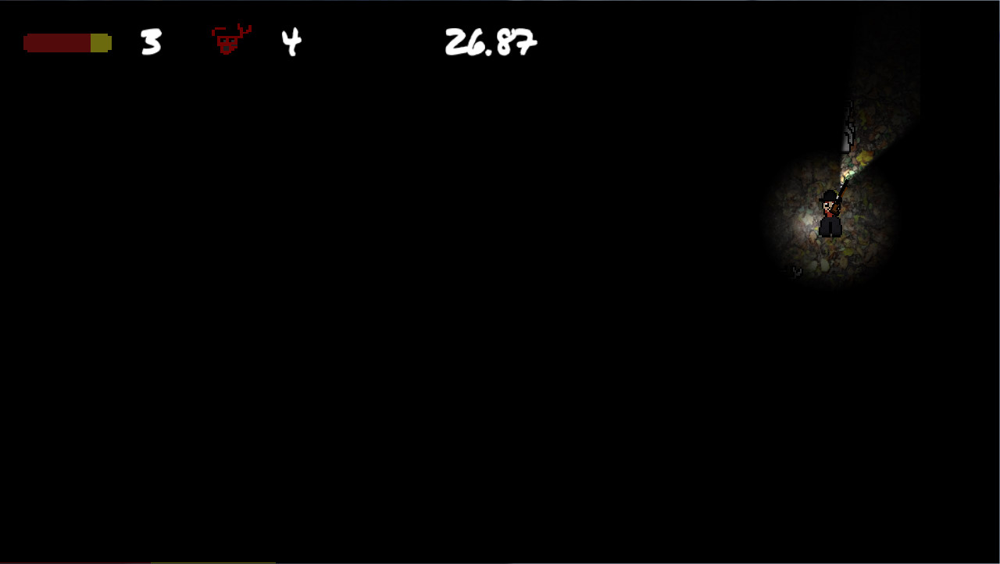
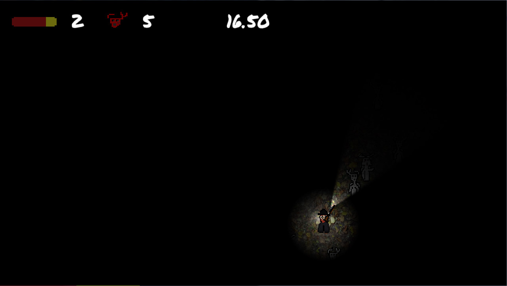

A lone wanderer is traveling through the forest at night when he encounters an eerie statue garden. As he continues on his way, he notices that some of the statues appear to be getting closer and closer, and their eyes seem to be watching his every step...
I made this game in one week as a part of my game development class at the University of Michigan. At the forefront of this game are the statues. Some of the statues are possessed and will move closer to the player when they are not looking. If they are neglected long enough, they will kill the player. The player can destroy statues with their shotgun, but they have very limited ammo. More statues will become possessed over time, and the player must survive until dawn (when the countdown reaches zero).